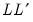
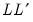

@cholesky Matrix Algebra Cholesky factor of matrix. Syntax: @cholesky(s) s: sym Return: matrix Returns a matrix containing the Cholesky factorization of . The Cholesky factorization finds the lower triangular matrix such that  is equal to the symmetric source matrix . Examples sym s = @inner(@mrnd(10, 10)) matrix chol = @cholesky(s) matrix orig1 = chol * chol.@t sym orig2 = @inner(chol.@t) computes the Cholesky, and uses it to recreate the original matrix. Note that ORIG1 is a matrix object whereas ORIG2 is a sym object. Inverting the Cholesky may be used to obtain the matrix inverse. sym sinv1 = @inverse(s) matrix invchol = @inverse(chol) matrix sinv2 = invchol.@t * invchol sym sinv3 = @inner(invchol) matrix id1 = sinv1 * s matrix id2 = sinv2 * s matrix id3 = sinv3 * s uses properties of the inverse of the Cholesky to recreate the matrix inverse so that ID1, ID2, and ID3 are all different computations yielding the identity matrix. Cross-references See also @inverse, @rank, @issingular, @ltrim, @qr, @svd, and @svdfull.


such that  is equal to the symmetric source matrix
.
 .
.